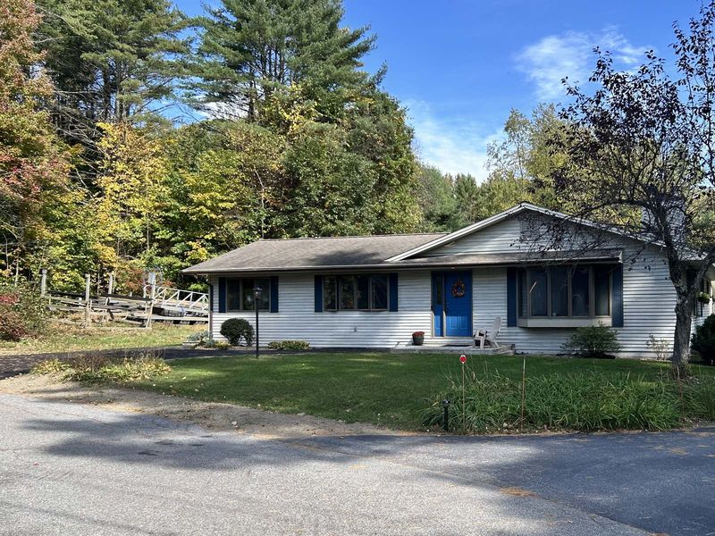
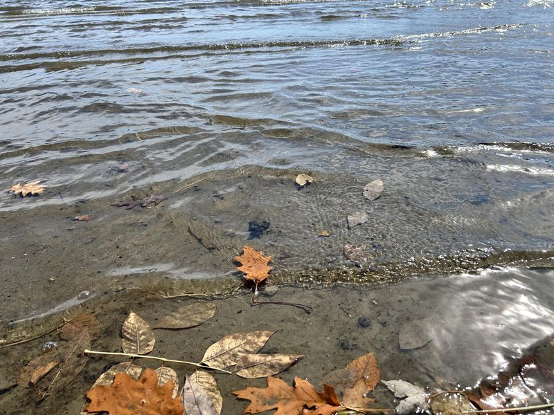
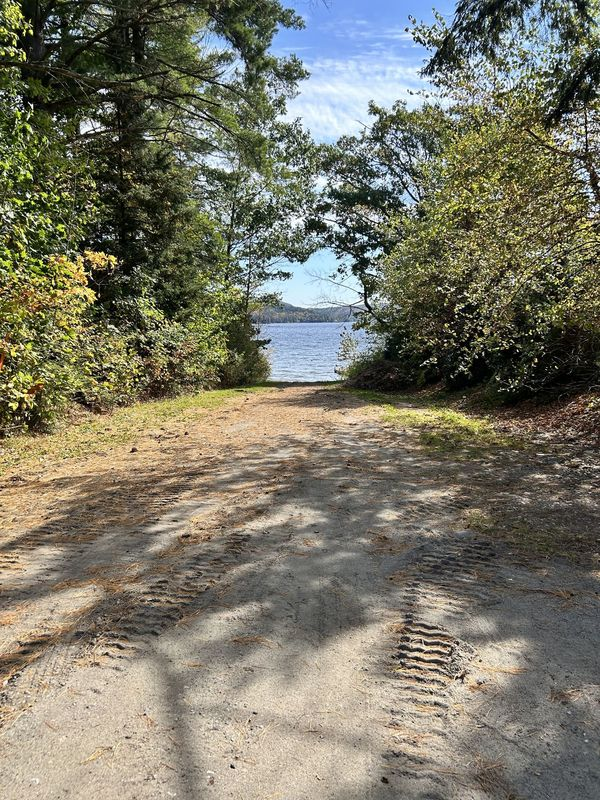
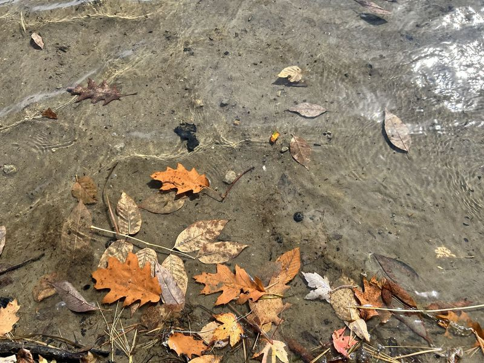

Adirondacks · New York
MJN Realty
Adirondack property, kept with care.
Adirondack property in the Lake George and Schroon Lake region of New York, founded by Matthew Nothdurft.
- Adirondacks
- Lake George
- Schroon Lake
- Queensbury
About MJN Realty
MJN Realty was founded by Matthew Nothdurft in the Adirondack region of New York. Two or three sentences in Matthew’s words: what MJN Realty is and why it exists
What we do
Own and care for property
MJN Realty owns property in the Adirondacks and keeps each one well maintained.
Seasonal stays
The Hayes House in Schroon Lake is offered as a seasonal rental to select guests, arranged directly.
More to come
Any other services MJN Realty offers, for Matthew to confirm
Featured property

Seasonal rental
The Hayes House
A private Adirondack retreat in Schroon Lake, kept for family, friends, and select guests by invitation. Stays are seasonal and arranged directly, never through a booking platform.
Bedrooms: 4 · Baths: 3 · Sleeps: 8
The region
Lakes, mountains, and quiet woods, from Lake George north to Schroon Lake.


